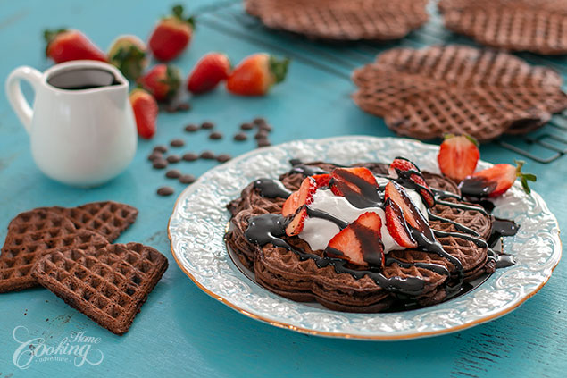
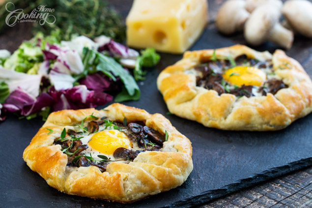
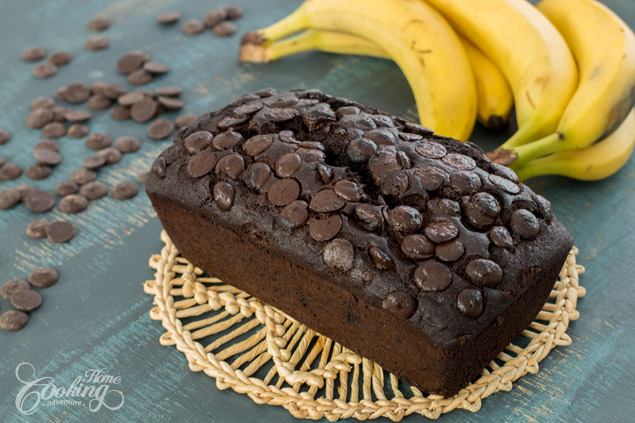
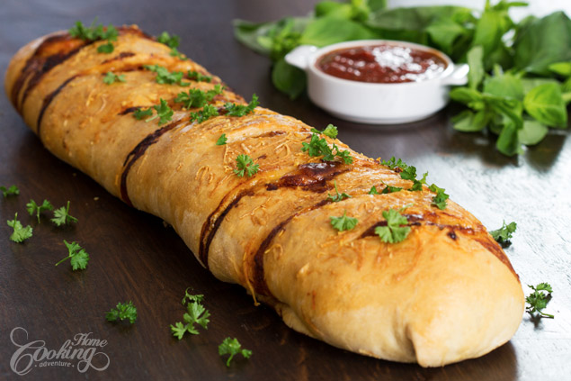
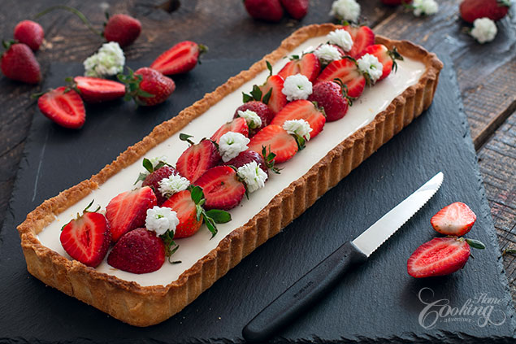
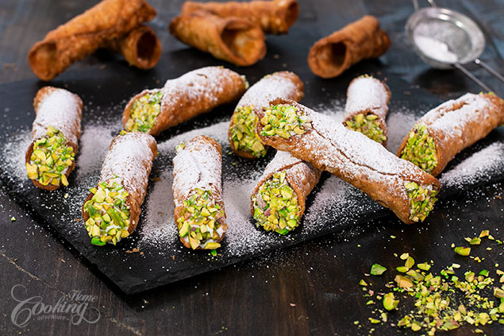

Double Chocolate Waffles
Decadent chocolate waffles, crispy on the outside, tender inside loaded with chocolate, lots of chocolate ...Double Chocolate Waffles, who could ever resist? This waffle recipe include both cocoa powder and chocolate chips for a rich and intense chocolate flavor. Served with somemore chocolate sauce on top could easy be considered Triple Chocolate Waffles. So good, so rich, so chocolaty, such a good texture balance….simply divine. Waffles in general can be made for breakfast but these ones can make an amazing dessert as well. They are very easy to prepare and can be served right away which makes them a good choice for whenever you have unexpected guests or to simply satisfy your chocolate craving immediately :) Hope you will try the recipe and enjoy as much as we did!
Mushroom Egg Galette
Rustic galettes are the perfect choice for whenever you need a quick impressive dish either savory or sweet. Mushroom Egg Galette is a comforting dish full of flavor and color perfect for any time of the day. Mushrooms are first sauteed with onion, garlic and thyme for extra flavor. The buttery crust is filled with gruyere cheese and topped with mushroom mixture, shaped into rustic galettes and baked until golden. Egg is added on top bringing color and flavor creating an irresistible dish for your family or guests.
Chocolate Banana Bread
If you usually love banana bread you will definitely love this Chocolate Banana Bread as it is one of the best ways to prepare it. It is moist, chocolaty and full of flavor and makes a great treat alongside morning coffee or milk. Whenever you make banana bread use ripe bananas to get the best flavor and texture. Use good quality cocoa powder and chocolate for an intense and delicious chocolate flavor. The recipe is really easy to prepare, and the chocolate bead can be made in advance and frozen for later use. Enjoy!
Chicken Stromboli
Stromboli is somehow similar to a calzone, a pizza or bread dough rolled over various fillings and baked. It is usually shaped in a long cylinder. This Chicken Stromboli is a delicious dish you can prepare whenever you have leftover chicken or turkey and it makes a great lunch or appetizer. If you are in a hurry you can even use store-bought dough and pizza sauce, but making the dough and the tomato sauce from scratch, whenever this is possible, improves the quality of this recipe. The dough recipe is the one I’ve used in homemade pizza recipe and I’ve also used the homemade tomato sauce to combine with the cooked chicken. Stromboli is best served a bit warm with your favorite dipping sauce.
Apple French Toast Roll-Ups

I really love finding new ideas for breakfast time like these Apple French Toast Roll-Ups, that are simply wonderful for apple season. Slices of bread, filled with delicious cream cheese and apple cinnamon mixture are rolled and dipped in egg and milk mixture and then cooked until golden brown. And that is not all, once cooked, they are rolled in a cinnamon sugar mixture for extra flavor and texture. It is such an incredible way of having apple for breakfast, and kids really love it. French Toast Roll-Ups can be made with various fillings, so just let your imagination find the perfect filling for your breakfast or snack. You can also consider making savory rolls like using cheese, ham or bacon or even veggies as filling. I am telling you, the options are endless. Hope you will give this delicious treat a try and don’t forget to let me know if you enjoyed them.
Egg Boats

I stumbled upon these kind of egg boats few time ago over Pinterest and I really loved this great idea for breakfast time. I kept the recipe simple using basic ingredients like bacon cheese and green onion but many variations can be made to this dish. Use different herbs, other type of cheese and meat to create each time a special breakfast. I really enjoyed making them, really easy, quick and so appetizing. These egg boats are crispy on the outside, soft inside and are greatserved warm alongside some fresh salad.
Creamy Italian Chicken

Italian salad dressing mix is like a secret weapon for adding flavor to this creamy chicken dish. Served over rice or pasta, it's rich, delicious and special enough for company. —Maura McGee, Tallahassee, Florida
Skillet Mac & Cheese

This super creamy mac 'n' cheese is so simple it seems almost too easy! Kids really go for the rich cheese flavor, but I've never met an adult who didn't love it too. —Ann Bowers, Rockport, Texas
Garlic Lover's Chicken

The garlic and lemon are great together on this breaded chicken. I've served this several times for special-occasion dinners. —Janice Steinmetz, Somers, Connecticut
Mom's Swedish Meatballs

Mom fixed this Swedish meatball recipe for all sorts of family dinners, potluck suppers and PTA meetings. The scent of browning meat is intoxicating. Add to that the sweet smell of onions caramelizing, and everyone’s mouth starts watering. —Marybeth Mank, Mesquite, Texas
Li'l Cheddar Meat Loaves

I got this recipe from my aunt when I was a teen and have made these miniature loaves many times since. My husband and three children count this main dish among their favorites. —Kathy Bowron, Cocolalla, Idaho
Enchilada Casser-Ole!

My husband loves this casserole, but it never lasts too long. Packed with black beans, cheese, tomatoes and plenty of Southwest flavor, it's an impressive entree that's as simple as it is simply delicious. —Marsha Wills, Homosassa, Florida
Strawberry Basil Panna Cotta Tart
I have always loved the idea of tarts and the endless combinations you can try to create each time a unique and irresistible dessert. This Strawberry Basil Panna Cotta Tart is definitely one of my favorite tarts as not only looks so delightful with those contrasting layers but implies a great flavor combination as well. Crispy almond and buttery crust topped with a strawberry jelly and followed by a layer of light basil panna cotta. Yes, you can use panna cotta for filling tarts.. isn’t that amazing? Basil brings a subtle herbal flavor to this dessert which brings it to another level. This Strawberry Panna Cotta Tart is a perfect dessert for welcoming spring, hope you’ll try it out and enjoy!
Vanilla Soufflé

I really love souffles as they are in the same time sophisticated yet simple and super delicious. I have already posted several recipes, either savory or sweet and they are all amazing and so easy to prepare. Souffles are the kind of dish you wanna prepare whenever you want to impress with your cooking skills. Even though many are hesitating to prepare them at home they are really not a big deal, and the process is really easy. These vanilla souffles are simply out of this world. So fluffy with a mousse like texture, almost melting in your mouth, light and airy and full of vanilla flavor. Such an amazing way of finishing your lunch or dinner. Enjoy!
Cannoli Siciliani
Ever since I've tried cannoli for the first time in Italy I’ve been eager to try them at home. I really like to take on new cooking challenges as once fulfilled they bring me a lot of satisfaction. I kind of stay away from fried desserts but these cannoli really got my attention and I knew I have to try them out sooner or later. And I am glad I did because I simply love them. Crispy pastry tubes filled with a flavorful ricotta filling and dipped in chopped crunchy pistachios...beautiful flavor and texture combination and hardly you can stop from eating just one.
Follow us: